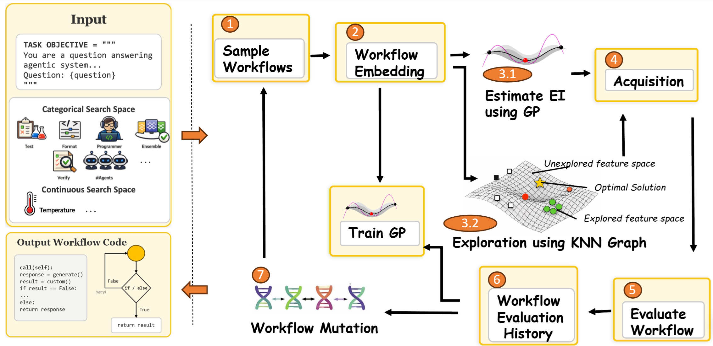
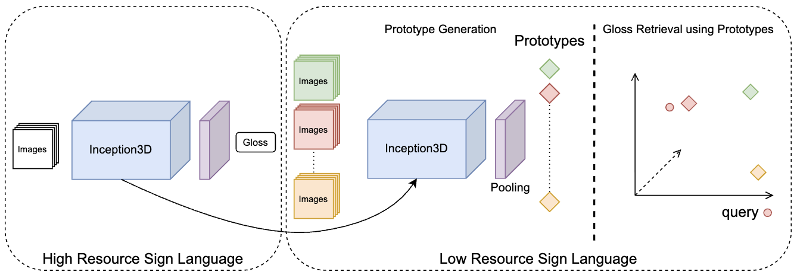

Why automated workflow search collapses onto one idea, and how a Gaussian
Process plus a KNN novelty term fixes it.
About Me
I am an MS student in Computer Science (thesis-based MSCS) at the University of Illinois Urbana-Champaign, graduating in 2028, where I work in the Supercomputing System and AI Lab (SSAIL) with Prof. Minjia Zhang. My current work extends KV-cache offloading to NVIDIA GH200 Grace-Hopper superchips, running on NCSA’s DeltaAI supercomputer. More broadly my research sits at the intersection of agentic AI and efficient LLM systems — how agents should communicate, how their workflows should be discovered rather than hand-built, and how to serve all of it efficiently.
Before UIUC I was a Research Fellow / Research Software Development Engineer at Microsoft Research India (M365 Research, AIOps), Jan 2025 – Aug 2026, where I led two first-authored projects: OPTiMACS, which formulates multi-agent LLM communication as an Expanding MDP and learns the optimal message structure, improving multi-hop QA accuracy by 6.7% (Findings of ACL 2026, plus a filed US patent and Microsoft’s MLADS); and BOFlow, an exploration-aware Bayesian optimisation framework that discovers agentic workflows and mitigates structural mode collapse, gaining ~10% average accuracy over SOTA baselines (accepted at ACL Rolling Review). I also co-designed a production GPU/LLM cluster router-scheduler, and built AutoToolStub for FLASH — a 100-way concurrent BFS test-case generator that produces pre-verified tool stubs from troubleshooting guides with provenance tracking, benchmarked across 60,000+ incident tickets.
I graduated with a B.Tech in Computer Science (minor in Cognitive Science) from IIT Kanpur with a 9.3/10 GPA. Along the way I worked on explainable AI for medical imaging at the IoT Lab, IIT Kanpur (EXACT-CT, KAN-Mamba FusionNet), on diffusion models at the CV Lab, EPFL in Switzerland, and on Indian Sign Language recognition at the Exploration Lab, IIT Kanpur (CISLR, EMNLP 2022).
Beyond research, I am deeply engaged in the startup and venture capital space. I worked in business analytics and venture capital at HP Tech Ventures, evaluating 50+ generative-AI and SaaS startups for strategic investment, and as a Generative AI Associate at PwC US. I founded the ACM SIGCHI Student Chapter at IIT Kanpur and the pro-bono HealthPredict initiative. I participate in hackathons and enjoy writing about the intersection of technology, product-market fit, and investing.
News & Talks
- Sep 10, 2026 Presenting OPTiMACS and BOFlow at the day-long AICE Conference at UIUC, and attending the Microsoft CoreAI Tech Talk @ UIUC the same day.
- Aug 2026 Started my MS in Computer Science at UIUC (thesis-based MSCS), joining the Supercomputing System and AI Lab (SSAIL) with Prof. Minjia Zhang — extending KV-cache offloading to NVIDIA GH200 superchips on NCSA’s DeltaAI.
- 2026 BOFlow accepted at ACL Rolling Review. [Blog]
- 2026 OPTiMACS published in Findings of ACL 2026 and presented at ACL and at Microsoft’s MLADS; also filed as a US patent. [Blog]
- 2026 Attending EMNLP 2026.
- Jan 2025 Joined Microsoft Research India (M365 Research) as a Research Fellow / Research Software Development Engineer.
Experience
Research Fellow / Research Software Development Engineer (RSDE)
Microsoft Research India — M365 Research (AIOps)
OPTiMACS: formulated multi-agent LLM communication as an Expanding MDP with
an RL framework for message-structure selection, improving multi-hop QA accuracy by 6.7% (5.1% over
o3) — Findings of ACL 2026, US patent filed, MLADS.
BOFlow: self-discoverable agentic workflows via exploration-aware Bayesian optimisation, ~10% average accuracy gain over SOTA baselines.
GPU router–scheduler co-design: co-designed a distributed scheduler for cloud GPU/LLM clusters using queuing-theoretic constraints, shipped to production for a 6% improvement over the existing baseline.
AutoToolStub (FLASH): built a parallelised test-case generator using 100-way concurrent BFS with provenance tracking to auto-generate pre-verified tool stubs, benchmarking FLASH’s incident-triaging agent across 60,000+ tickets.
BOFlow: self-discoverable agentic workflows via exploration-aware Bayesian optimisation, ~10% average accuracy gain over SOTA baselines.
GPU router–scheduler co-design: co-designed a distributed scheduler for cloud GPU/LLM clusters using queuing-theoretic constraints, shipped to production for a 6% improvement over the existing baseline.
AutoToolStub (FLASH): built a parallelised test-case generator using 100-way concurrent BFS with provenance tracking to auto-generate pre-verified tool stubs, benchmarking FLASH’s incident-triaging agent across 60,000+ tickets.
Generative AI Associate
PwC US (Bangalore Advisory Centre)
Built and shipped an agentic workflow for the Customer Links App from scratch to
production in one month under Scrum, using RAG pipelines and LLM agents to cut token usage and improve
context management. Built large-scale PySpark data pipelines over a data fabric serving 30M users and
60M features.
Junior Research Fellow
IoT Lab, IIT Kanpur — advised by Prof. Priyanka Bagade
Built EXACT-CT to distinguish Crohn's Disease from Intestinal TB on 3D CTE scans
using radiologist-identified biomarkers, reaching 75% accuracy (p = 0.03) with SHAP-validated XGBoost
and beating ResNet and CT-Foundation baselines. Proposed the theory behind KAN-Mamba FusionNet.
Business Analytics & Venture Capital
HP Tech Ventures
Evaluated 50+ generative-AI and SaaS startups with an investment-ranking framework
(market sizing, tech-stack diligence, unit economics, cap-table review), completing full due diligence
on three of them.
Visiting Research Student, CV Lab
EPFL — advised by Prof. Mathieu Salzmann
Implemented two novel diffusion architectures reproducing the functionality of
Spatial Transformer Network modules, reaching 50% MNIST classification accuracy from a 10% random
baseline.
Summer Research Intern, Exploration Lab
IIT Kanpur — advised by Prof. Ashutosh Modi
Built the vision pipeline for CISLR, the largest continuous Indian Sign Language
dataset (~4,700 words), using OpenFace and OpenPose for landmark extraction and an I3D backbone for
the low-resource baseline. Published at EMNLP 2022.
Education
MS in Computer Science
University of Illinois Urbana-Champaign
Thesis-based MSCS. Supercomputing System and AI Lab (SSAIL)
with Prof. Minjia Zhang, extending KV-cache offloading to NVIDIA GH200 Grace-Hopper superchips on
NCSA’s DeltaAI supercomputer.
Coursework: Distributed Systems (CS 425), Machine Learning Systems (CS 498), Advanced Topics in NLP (CS 546).
Coursework: Distributed Systems (CS 425), Machine Learning Systems (CS 498), Advanced Topics in NLP (CS 546).
B.Tech in Computer Science (Minor in Cognitive Science)
Indian Institute of Technology (IIT) Kanpur
Dr. Prateek Mishra Memorial Scholarship (highest GPA in the department, 2022);
Academic Excellence Award (2021, 2022); JEE Advanced AIR 603 (top 0.3%).
Exchange Semester in Computer Science
École Polytechnique Fédérale de Lausanne (EPFL)
Selected among the top 3 of 1,200 students for the EPFL exchange nomination.
Selected Publications
-

BOFlow: Exploration-Aware Bayesian Optimisation in Workflow Space for Agent EvolutionAccepted at ACL Rolling Review (ARR), 2026 -
 OPTiMACS: Learning Optimal Message Representations for Agentic CommunicationFindings of ACL 2026 · Microsoft MLADS · US Patent (filed), 2026
OPTiMACS: Learning Optimal Message Representations for Agentic CommunicationFindings of ACL 2026 · Microsoft MLADS · US Patent (filed), 2026 -
-
-

Selected Projects
View all →
SuperInfer on GH200
My current work in SSAIL at UIUC: extending KV-cache offloading to NVIDIA GH200 Grace-Hopper superchips, so long-context LLM inference can use the coherent CPU–GPU memory the superchip exposes instead of being bounded by HBM. Runs on NCSA’s DeltaAI supercomputer.
CUDA
GH200
LLM Inference
HPC
ConferencePapers
A full-stack research discovery and strategy engine for analysing accepted (and rejected) papers across ICLR, ICML, NeurIPS, AAAI, ACL and EMNLP in the "Agents for Productivity" space. FastAPI + vanilla JS, a three-level cache, RAG-Fusion semantic search, and an LLM-powered pivot engine.
Python
FastAPI
RAG
LLM
Agri-Health Vulnerability Engine
The public release of my HealthPredict work: a reproducible, end-to-end geospatial ML pipeline that maps the co-occurrence of standing-water vector habitat, population exposure and poor primary-care access on a 1 km grid across the Terai belt, and explains the drivers with SHAP.
Python
Geospatial ML
SHAP
Streamlit
ExactCT
A diagnostic pipeline distinguishing Crohn's Disease from Intestinal TB using 3D CTE scans. Reaches 75% accuracy from radiologist-identified biomarkers fed to an XGBoost classifier, addressing a treatment-mismanagement risk where the two diseases require opposite therapies.
Python
Medical Imaging
XGBoost
Explainable AI
YouTube Playlist Summariser
An LLM-based tool that turns a YouTube playlist into a browsable HTML summary with reference frames, plus a question-answering facility over the transcripts.
Python
NLP
LLM
YouTube API
Samvaad Saathi
A regional-language chatbot built with Bhashini, LangChain and Flask — one of the projects I supervised as founding chair of the ACM SIGCHI chapter at IIT Kanpur, aimed at users who are locked out of English-only interfaces.
Flask
LangChain
Bhashini
HCI
Python → x86 Compiler
A compiler for a Python subset targeting x86 assembly, written in C++ — lexing, parsing, semantic analysis, IR and code generation, built for the compilers course at IIT Kanpur.
C++
Compilers
x86 Assembly
Curriculum Vitae
You can view and download my current CV below.
Latest Thoughts
View all →I write up my research in long form — the motivation, the design choices and what the numbers actually say — and I also blog about books, startups and investing.
Learning the optimal message format for passing information between LLM
agents, and why natural language is a poor default.
Engineering write-up: generating pre-verified tool stubs from
troubleshooting guides, and benchmarking an incident-triaging agent across 60,000+ tickets.
Explainable analysis for distinguishing Crohn's Disease from Intestinal TB
on CT scans — where the two diseases demand opposite treatments.
Everything else — books, startups, investing, IIT Kanpur — lives here.
Community Involvement
Building communities in HCI research, cognitive science, and developer ecosystems. Currently a member of the ACM student chapter at UIUC.
ACM SIGCHI IIT Kanpur Chapter
Founder & Chairperson
Established and led the first student chapter of ACM SIGCHI in India. Organized workshops, talks, and design hackathons to promote HCI research and practice among students.
Read the Medium Blog →
Established and led the first student chapter of ACM SIGCHI in India. Organized workshops, talks, and design hackathons to promote HCI research and practice among students.
Brain and Cognitive Society (BCS)
Leader
Active leader of the Brain and Cognitive Society at IIT Kanpur. Facilitated discussions and events bridging neuroscience, psychology, and artificial intelligence.
Active leader of the Brain and Cognitive Society at IIT Kanpur. Facilitated discussions and events bridging neuroscience, psychology, and artificial intelligence.
HealthPredict
Founder
Led a health-tech pro-bono initiative focused on predictive analytics for early disease detection. Directed the technical development and product strategy during undergraduate years.
Read More →
Led a health-tech pro-bono initiative focused on predictive analytics for early disease detection. Directed the technical development and product strategy during undergraduate years.
Teaching Assistantship
Teaching Assistant (ESC101A & ESC102A)
Served as a TA for ESC101A (Basic C Programming) and ESC102A (Advanced Programming). Enjoyed the challenge of making complex concepts simple for students without prior programming experience, devising engaging questions and assignments, and translating/explaining concepts in Hindi for students who had trouble understanding the English instruction.
Served as a TA for ESC101A (Basic C Programming) and ESC102A (Advanced Programming). Enjoyed the challenge of making complex concepts simple for students without prior programming experience, devising engaging questions and assignments, and translating/explaining concepts in Hindi for students who had trouble understanding the English instruction.